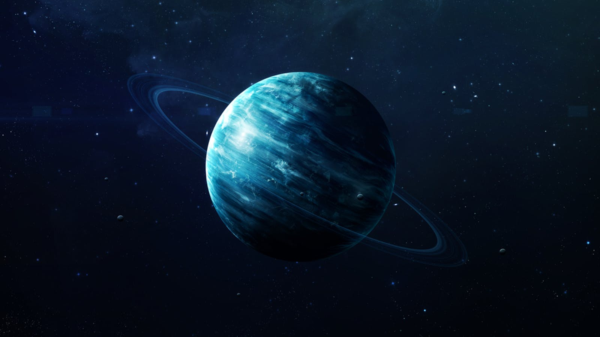

URANUS天王星

天王星是太陽系八大行星中的第七個行星，介於土星與海王星之間，是太陽系中唯一躺著運轉的行星。 天王星是在1781年由英國天文學家威廉赫歇爾所發現的。天王星與太陽的距離已經非常遙遠了，太陽光從太陽發出到達天王星需要經過2.7小時之久。天王星繞行太陽則需要約84年才能繞完一圈。另外天王星 也是類木行星之一。藍綠色天王星是以氣體為主要成份的類木行星，因此表面沒有明顯的地形結構。藍藍的一片看起來十分完美，且表面沒有像木星以及土星所擁有的明顯環狀結構，在航海家第一次拍攝天王星的時候，也沒有看到過跟明顯的颱風構造(如木星的大紅斑以及海王星的大黑斑)，但是其實天王星的表面仍然有大氣的活動。
Back to home...